Grouped Data: height ~ age | Subject
Subject age height Occasion
1 1 -1.0000 140.5 1
2 1 -0.7479 143.4 2
3 1 -0.4630 144.8 3
4 1 -0.1643 147.1 4
5 1 -0.0027 147.7 5
6 1 0.2466 150.2 6資料分析
第四章：集體 geoms
劉昱佑
實踐大學
2026-06-06
集體 geoms
集體 geoms
geoms 大致可分為個別（individual）或集體（collective）兩類。個別 geom 為資料的每一列呈現一個獨立的圖形物件——例如，geom_point() 為每筆觀測值放置單一個點。
相對地，集體 geom（collective geom）用單一個幾何物件代表多筆觀測值。這種行為可能源自統計摘要（例如盒鬚圖），也可能是該 geom 定義本身所固有的（例如多邊形）。
線（lines）與路徑（paths）則居於中間位置：每條呈現出來的線都由一連串直線段所構成，而每一段都編碼了兩個資料點。
支配觀測值如何被指派給圖形元素的機制，就是 group 美學。
預設情況下，group 由圖中所映射的所有離散變數的交互作用推導而來。這種隱含的分組經常能產生我們想要的劃分——但當它做不到時，或當沒有任何離散變數存在時，就必須藉由把 group 映射到適當的變數，明確指定分組結構。
Oxboys 資料集
本章各範例都取材自 nlme 套件中的 Oxboys 資料集。它記錄了 26 個男孩（Subject）的身高（height）與置中後的年齡（age），每個人在九個不同時點（Occasion）被量測。Subject 與 Occasion 都以有序因子儲存。
多個群組、單一美學
多個群組、單一美學
一個常見的情境是：想把資料分成不同群組，同時又以相同的視覺樣式呈現所有群組。目標是讓個別受試者可被區分，而不必為它們加上標籤。具有許多受試者的縱貫性研究經常需要這種處理，所產生的圖非正式地被稱為義大利麵圖（spaghetti plots）。
下圖描繪每個男孩隨時間的成長軌跡。在 aes() 中設定 group = Subject，會指示 geom_line() 為每位受試者畫出一條相連的線：
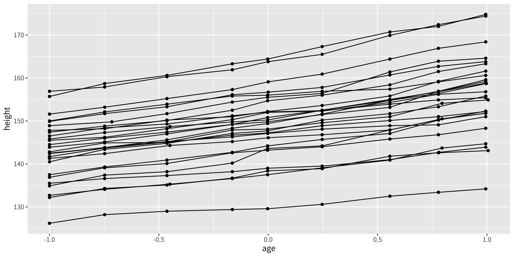
沒有正確分組會發生什麼？
如果省略 group 美學，ggplot2 找不到離散變數，便會把所有觀測值都視為屬於同一個群組。其結果是一種特有的鋸齒型態（sawtooth pattern）——線以任意的順序連接來自不同受試者的觀測值——這顯然會造成誤導：
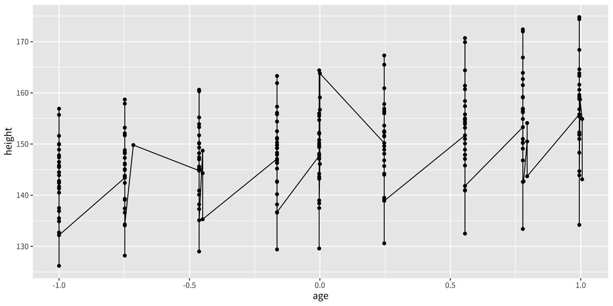
依多個變數分組
當一個群組是由多於一個變數的組合、而非單一欄位所定義時，使用 interaction() 建構一個複合的分組鍵：
這確保了共享相同學校且相同學生識別碼的觀測值，會被視為屬於同一個群組。
練習
為
cyl的每個值畫出hwy的盒鬚圖，但不要把cyl轉換成因子。你必須設定哪個額外的美學才能讓它運作？修改下面的圖，使得
displ的每個整數值都產生一個獨立的盒鬚圖：
不同圖層上的不同群組
不同圖層上的不同群組
在某些情況下，一張圖的不同圖層需要不同層級的彙總。例如，某一個圖層可能顯示個別的軌跡，而另一個圖層則覆蓋單一條整體趨勢線。
如果分組美學在 ggplot() 中被全域設定，它會傳播到每一個圖層——包括 geom_smooth()。其結果是每個群組各有一條平滑線，而這通常不是我們想要的：
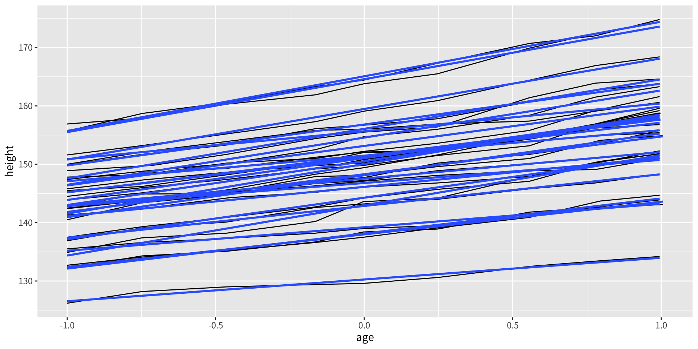
這會為每位受試者各產生一條線性配適，而非一條摘要所有男孩的單一趨勢線。請記得：分組不僅控制幾何，也控制統計轉換——每個 stat 都會針對每個群組獨立執行。
解決問題：圖層專屬的分組
解法是把 group 美學從全域的 ggplot() 呼叫移到 geom_line() 之中。geom_smooth() 圖層於是沒有離散變數可供分組，便預設把所有觀測值視為一個群組，產生單一條整體的平滑線：
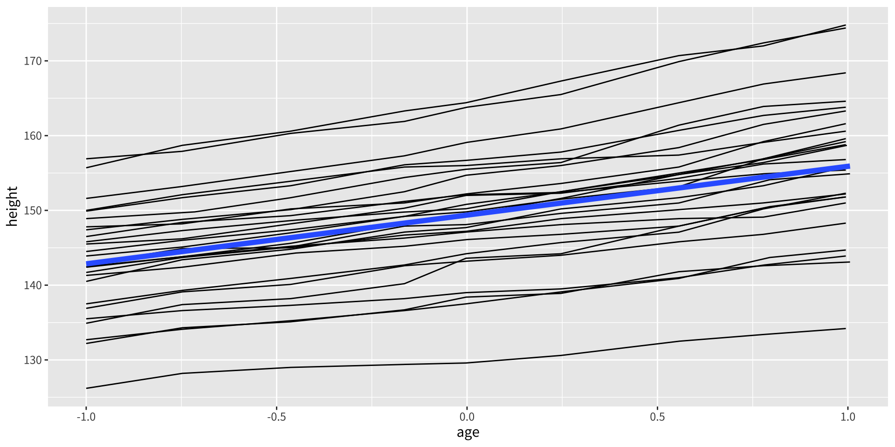
關鍵重點
在 ggplot() 中設定的美學是全域的，會套用到後續的每一個圖層。在個別 geom 函式中設定的美學則是局部的，只套用到該圖層。當不同圖層需要不同的分組結構時，這個區別至關重要。
覆寫預設的分組
覆寫預設的分組
有時一張圖具有離散的 x 軸，但我們仍想畫出跨群組、而非群組內連接觀測值的線。這種型態出現在交互作用圖、剖面圖與平行座標圖等。
考慮在每個量測時點 Occasion 畫出 height 的盒鬚圖。由於 Occasion 是離散變數，ggplot2 自動為每個時點畫一個盒鬚圖：
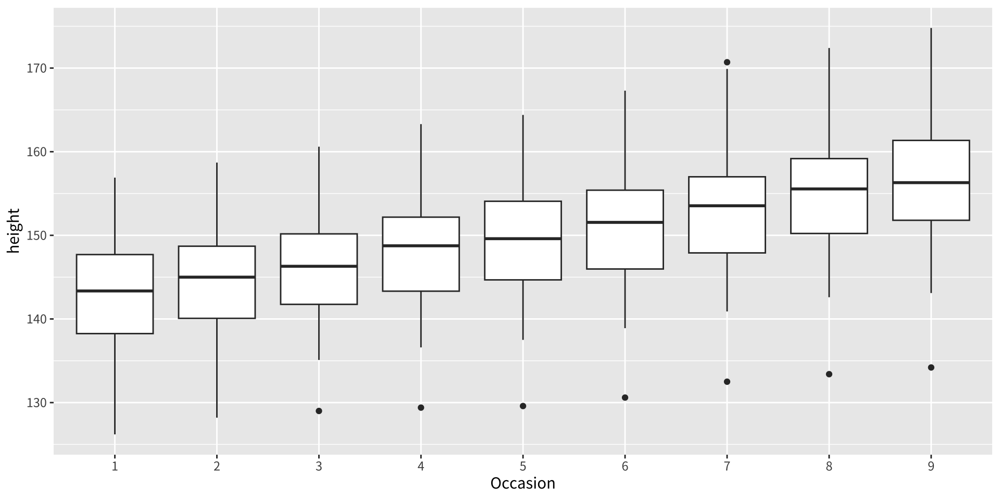
天真地加上線並不奏效
只是把 geom_line() 加到盒鬚圖上，所畫出的線是在每個時點之內（連接同一個 x 位置的觀測值），而非跨時點、依受試者連接。這是因為預設的分組是由 Occasion 驅動的：
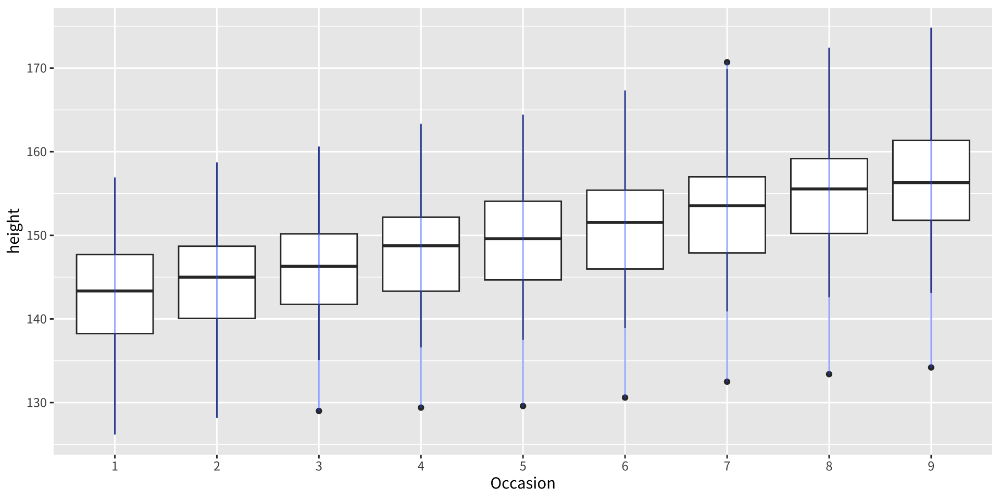
在單一圖層中覆寫分組
修正之道是在 geom_line() 中明確覆寫分組，指定每位受試者各一條線。盒鬚圖圖層保留其依 Occasion 的預設分組，而線圖層使用 Subject：
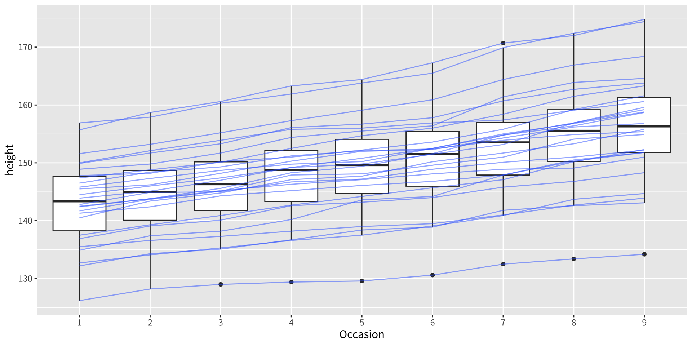
如今每一條藍線都描繪出一個男孩在全部九個時點的成長，正如我們所期望的。
練習
- 在示範「把連續顏色 vs. 離散顏色映射到線」的差異時，離散的例子需要
aes(group = 1)。為什麼？省略它會發生什麼？aes(group = 1)與aes(group = 2)之間有什麼差別？
把美學對應到圖形物件
把美學對應到圖形物件
集體 geoms 會引出一個重要問題：當個別觀測值帶有不同的美學值時，這些值該如何映射到單一個幾何物件上？
ggplot2 依 geom 類型不同而以不同方式處理。
線與路徑：「第一個值」規則
對於 geom_line() 與 geom_path()，每一段都由兩個連續的觀測值定義。ggplot2 會把兩個觀測值中第一個的美學值（例如 colour）套用到每一段。最後一個觀測值的美學則永遠不會被套用到任何一段。
library(patchwork)
df <- data.frame(x = 1:3, y = 1:3, colour = c(1, 3, 5))
p1 <- ggplot(df, aes(x, y, colour = factor(colour))) +
geom_line(aes(group = 1), linewidth = 2) +
geom_point(size = 5)
p2 <- ggplot(df, aes(x, y, colour = colour)) +
geom_line(aes(group = 1), linewidth = 2) +
geom_point(size = 5)
p1 | p2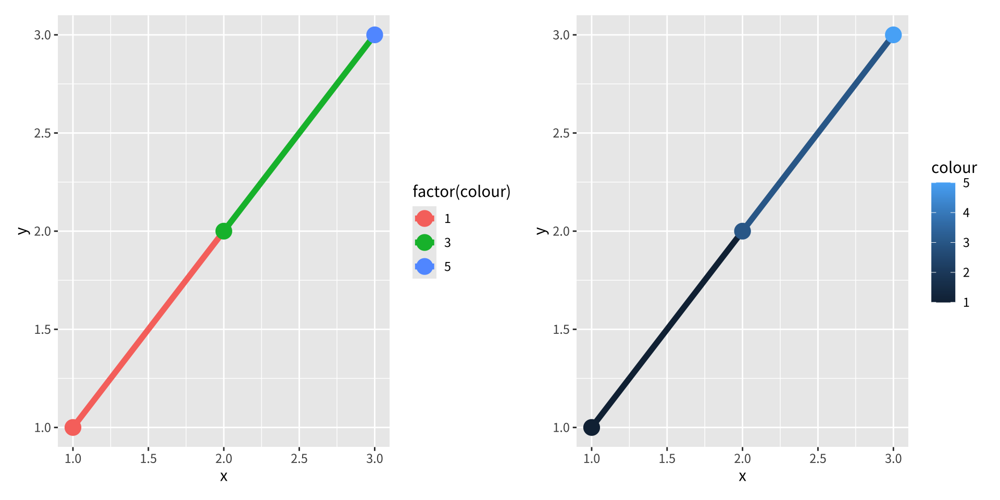
在左圖（離散顏色）中，第一個點與第一段是紅色，第二個點與第二段是綠色，而最後一個點（後面沒有跟著任何段）是藍色。
在右圖（連續顏色）中，相同的「第一個值」原則套用於三種深淺的藍色。關鍵在於，ggplot2 不會在美學值之間平滑地內插——即使是連續變數也一樣。如果想要沿著線有平滑的顏色漸層，就必須手動執行內插：
手動線性內插以做出平滑的顏色漸層
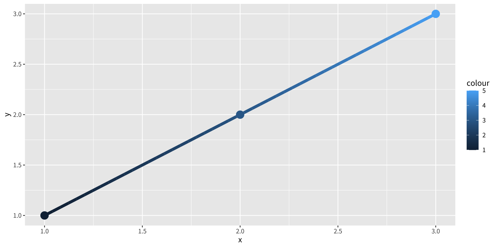
approx() 函式在 50 個等距的位置上，對 y 座標與 colour 值都進行線性內插，沿著路徑產生平滑的漸層。
額外的限制：線型必須固定
路徑與線受到一個重要限制：linetype 美學在整條線上必須保持固定。R 沒有任何機制可以呈現一條其線型（實線、虛線、點線等）沿其長度連續變化的線。
多邊形與其他複雜的集體 geoms
對於比線更複雜的 geoms——例如多邊形——單一個幾何物件可能對應到許多觀測值，使得不同美學值該如何協調變得曖昧不清。例如，如果一個多邊形的每個邊界頂點都指定不同的填色，那它該如何填色？
ggplot2 用一條簡單的規則化解這個模糊：只有當整個群組的美學值全都相同時，才使用來自個別觀測值的美學。如果美學值有所不同，ggplot2 便改用它的預設值。
離散變數：分裂成子群組
對於離散的 fill 或 colour 變數，ggplot2 會自動把該變數納入 group 美學。這會把集體 geom 分裂成更小的片段。對於長條圖與面積圖，把這些片段堆疊起來會保留未分組資料的形狀：
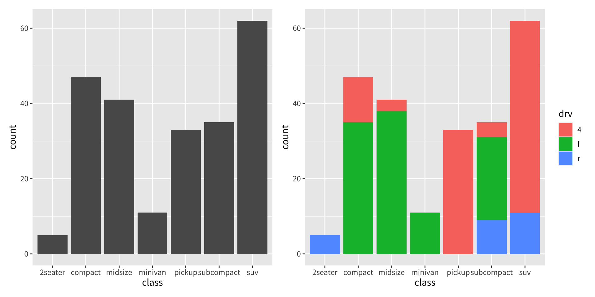
長條搭配連續 fill：一個常見的陷阱
在 geom_bar() 中把連續變數映射到 fill 並不會以相同方式運作。由於每根長條橫跨多筆有不同 hwy 值的觀測值，沒有單一顏色能摘要它們，於是 ggplot2 退回到預設的灰色：
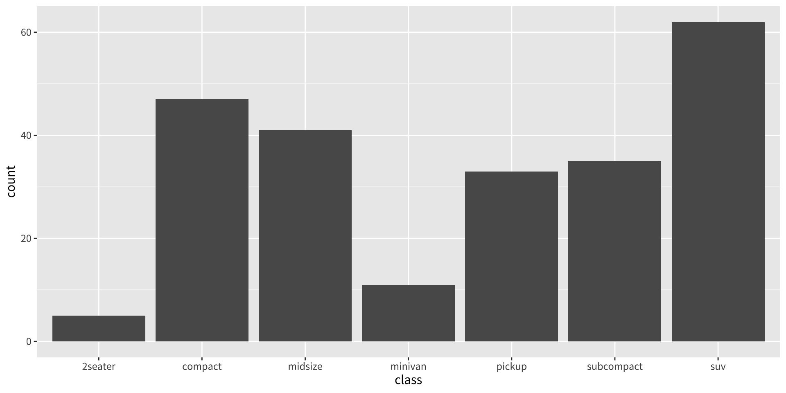
修正之道：覆寫分組
要在每根長條內顯示多種填色，我們必須覆寫分組，使每個獨特的 hwy 值各自形成一段子長條。堆疊後的結果揭示了每個車輛 class 內高速公路燃油經濟性的分布：
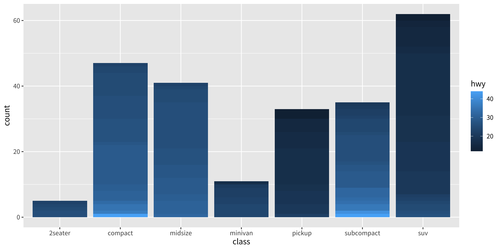
使用這個技巧時，長條會依分組變數（此處為 hwy）所定義的順序堆疊。如果需要精確控制堆疊順序，請把 hwy 轉換成因子，並依需求排列其水準。
練習
- 以下每張圖各顯示多少根長條？解釋你的推理。
（提示：加上 colour = "white" 來描出個別子長條的外框。）
- 安裝
babynames套件並執行下面的程式碼。找出所產生的圖有什麼問題並加以修正。為什麼未修正的版本看起來出乎意料？
版權聲明
版權聲明。 本教材改編自 ggplot2: Elegant Graphics for Data Analysis (3e)。所有權利均由原作者與出版者保留。
僅供非商業用途。 本教材嚴格限定用於教育目的，不得用於商業獲利。
適當標註出處。 任何對本教材的重製、散布或使用，都必須適當標註原始出處。

ggplot2: Elegant Graphics for Data Analysis